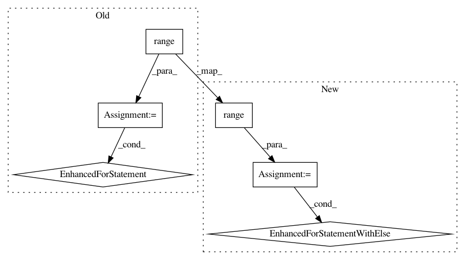

8b3f79f3079834f00c7ec62d5decd6bc026c1bc8,python/ray/tune/tests/test_cluster.py,,test_cluster_interrupt_searcher,#Any#Any#,738
Before Change
// Wait until the right checkpoint is saved.
// The trainable returns every 0.5 seconds, so this should not miss
// the checkpoint.
for i in range(50):
if TrialRunner.checkpoint_exists(local_checkpoint_dir):
// Inspect the internal trialrunner
runner = TrialRunner(
resume="LOCAL", local_checkpoint_dir=local_checkpoint_dir)
trials = runner.get_trials()
if trials and len(trials) >= 10:
break
time.sleep(.5)
if not TrialRunner.checkpoint_exists(local_checkpoint_dir):
raise RuntimeError(
f"Checkpoint file didn"t appear in {local_checkpoint_dir}. "
f"Current list: {os.listdir(local_checkpoint_dir)}.")
After Change
// Wait until the right checkpoint is saved.
// The trainable returns every 0.5 seconds, so this should not miss
// the checkpoint.
for i in range(50):
if TrialRunner.checkpoint_exists(local_checkpoint_dir):
// Inspect the internal trialrunner
runner = TrialRunner(
resume="LOCAL", local_checkpoint_dir=local_checkpoint_dir)
trials = runner.get_trials()
if trials and len(trials) >= 10:
break
time.sleep(.5)
else:
raise ValueError(f"Didn"t generate enough trials: {len(trials)}")
if not TrialRunner.checkpoint_exists(local_checkpoint_dir):
raise RuntimeError(
f"Checkpoint file didn"t appear in {local_checkpoint_dir}. "
f"Current list: {os.listdir(local_checkpoint_dir)}.")
In pattern: SUPERPATTERN
Frequency: 3
Non-data size: 6
Instances
Project Name: ray-project/ray
Commit Name: 8b3f79f3079834f00c7ec62d5decd6bc026c1bc8
Time: 2020-11-14
Author: rliaw@berkeley.edu
File Name: python/ray/tune/tests/test_cluster.py
Class Name:
Method Name: test_cluster_interrupt_searcher
Project Name: tensorlayer/tensorlayer
Commit Name: 16a31e2c9fedc654e9117b42b8144adf1d0e4900
Time: 2020-02-03
Author: 34995488+Tokarev-TT-33@users.noreply.github.com
File Name: examples/reinforcement_learning/tutorial_TRPO.py
Class Name: TRPO
Method Name: update
Project Name: ray-project/ray
Commit Name: c773824f4f22a14375a2451264d1b5708addd0f9
Time: 2020-06-03
Author: twakhare@gmail.com
File Name: rllib/models/tests/test_distributions.py
Class Name: TestDistributions
Method Name: _stability_test